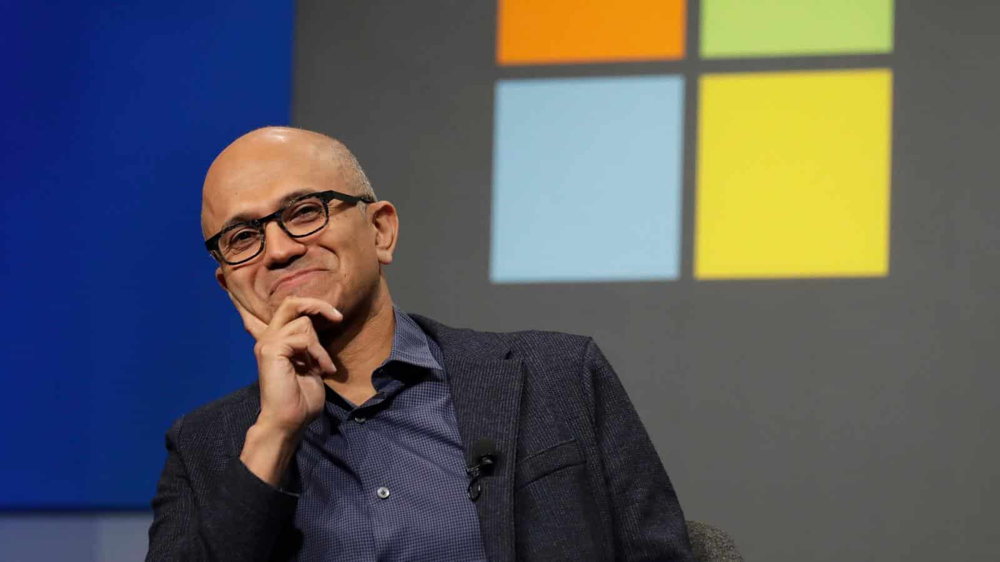

¿ Que es ?
La comunicación empresarial es el proceso de intercambio de información y mensajes dentro de una organización y con sus públicos externos, como clientes, proveedores, socios y la comunidad en general. Este tipo de comunicación es esencial para el funcionamiento eficiente y efectivo de cualquier empresa, ya que facilita la coordinación de actividades, la toma de decisiones, la resolución de problemas y la construcción de relaciones sólidas.
La carrera de Comunicación Empresarial se centra en desarrollar habilidades para gestionar la comunicación tanto interna como externa de las organizaciones. Los estudiantes aprenderán a diseñar, implementar y evaluar estrategias de comunicación que favorezcan el cumplimiento de los objetivos empresariales.

Habilidades que se desarrollan a lo largo del curso, como redacción, oratoria, gestión de crisis, uso de herramientas digitales, etc.
Los graduados de esta carrera tienen la posibilidad de desempeñarse en diversos roles, tales como:
Relaciones Públicas
Marketing y Publicidad
Comunicación Corporativa
Consultoría en Comunicación
Gestión de Crisis y Comunicación Interna
Importancia de la Comunicación Empresarial en la Sociedad:
Mejora de la Eficiencia y Productividad
Mejora de la Reputación y la Imagen Corporativa
Fortalecimiento de la Cultura Organizacional
Gestión de Crisis
Relaciones con los Clientes
Fomenta el Trabajo en Equipo:
La buena comunicación facilita la colaboración entre equipos y departamentos. Ayuda a coordinar esfuerzos y a alcanzar objetivos comunes de manera más efectiva.
Aumenta la Retención de Empleados:
Una comunicación efectiva puede aumentar la satisfacción laboral y reducir la rotación de empleados. Los empleados que se sienten informados y valorados son más propensos a permanecer en la empresa.
Mejora el Cumplimiento Normativo:
Mantener una comunicación clara sobre políticas, procedimientos y regulaciones ayuda a asegurar que la empresa cumpla con todas las normativas y requisitos legales.

Satya Nadella (Microsoft):
Transparencia: Nadella es conocido por su comunicación abierta y honesta con empleados y stakeholders.
Escucha Activa: Escucha y valora las opiniones y sugerencias de su equipo.
Visión Clara: Comunica de manera clara y concisa la visión y estrategia de la empresa.
Indra Nooyi (PepsiCo):
Empatía: Nooyi se asegura de que su comunicación refleje comprensión y empatía hacia los empleados.
Inspiración: Motiva a su equipo a través de mensajes positivos y alentadores.
Claridad: Comunica de manera efectiva los objetivos y expectativas.
Jack Welch (General Electric):
Liderazgo: Welch es conocido por su capacidad para guiar y motivar a su equipo.
Claridad: Comunica de manera clara y directa, eliminando cualquier ambigüedad.
Innovación: Fomenta la innovación y la creatividad a través de su comunicación.